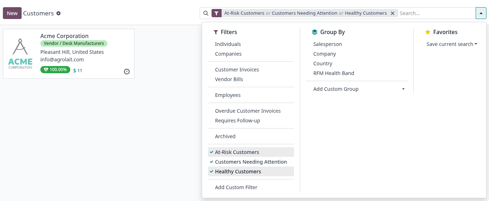

Key Features
Recency & Monetary Analysis
Automatic At-Risk Activities
Daily Cron Recomputation

The customer list gains dedicated health score filters (Healthy, At Risk, Critical) and a colour-coded kanban card showing the RFM Health Score (%) for each customer. A daily cron recomputes all scores automatically and creates a follow-up activity for the assigned salesperson when a score drops below 40 %.

RFM Score (%) = 0.6 × Recency Score + 0.4 × Monetary Score
Requires at least 3 posted invoices to produce a meaningful score. Both components range from 0 to 100.
Recency Score (weight 60 %)
Measures how recently the customer last purchased, relative to their own average purchase frequency (F = average days between invoices).
A customer who buys every 30 days and last bought 60 days ago scores 50 on recency.
Monetary Score (weight 40 %)
Compares the average of the last 2 invoices against the customer's overall historical average (amount_untaxed).
score = (last-2 avg / overall avg) × 100
Capped between 0 and 100. An alert flag is also logged if the last 2 orders fall ≥ 40 % below the historical average, signalling a sudden spending drop.
Health Levels
≥ 70 %
40 – 70 %
< 40 % → auto activity
Recency & Monetary Analysis
Automatic At-Risk Activities
Daily Cron Recomputation